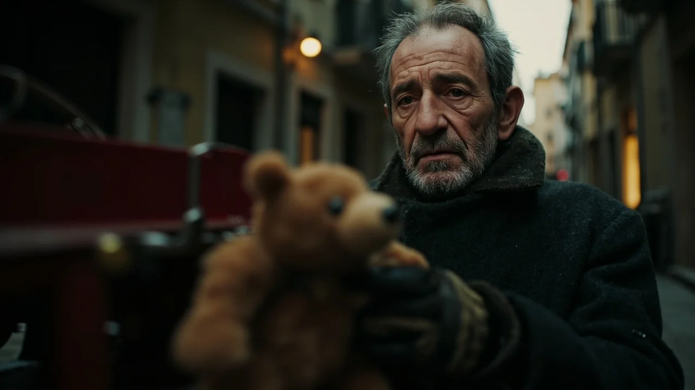
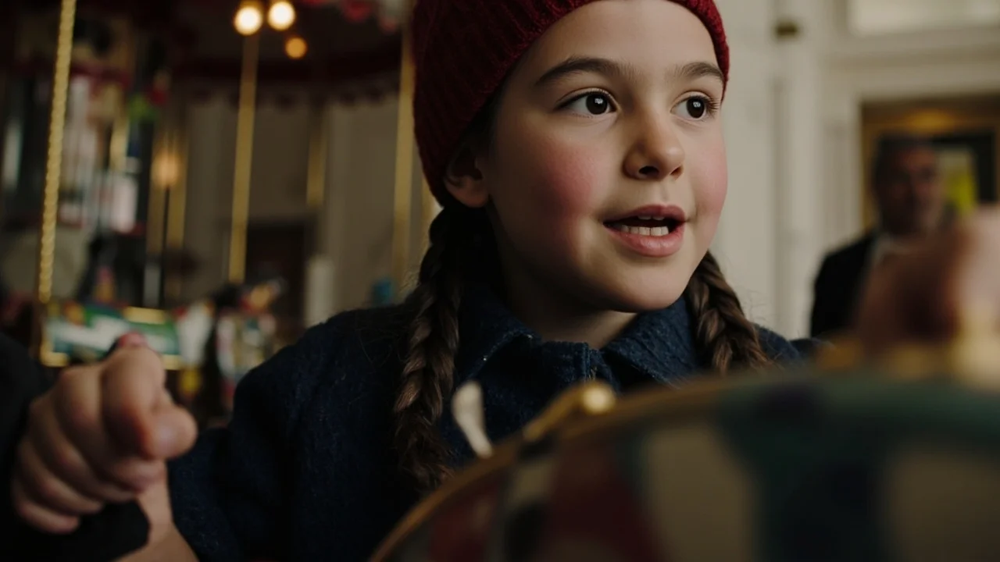
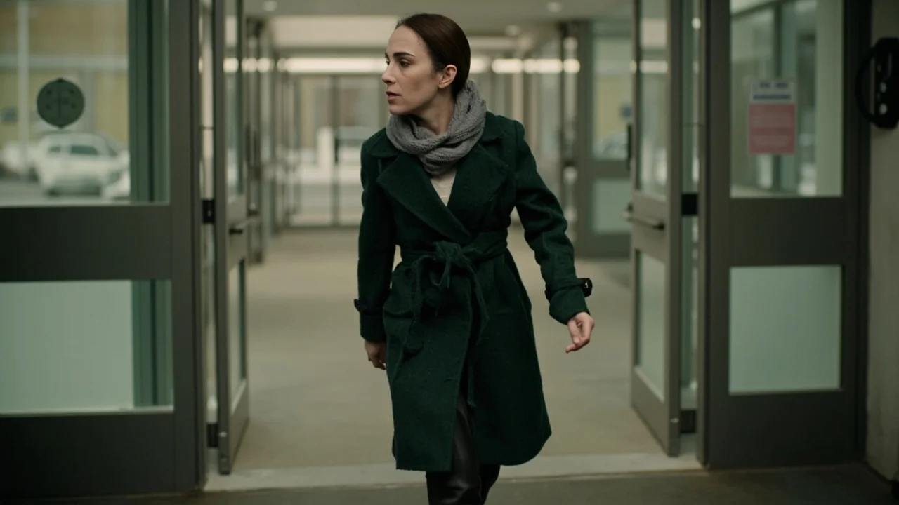
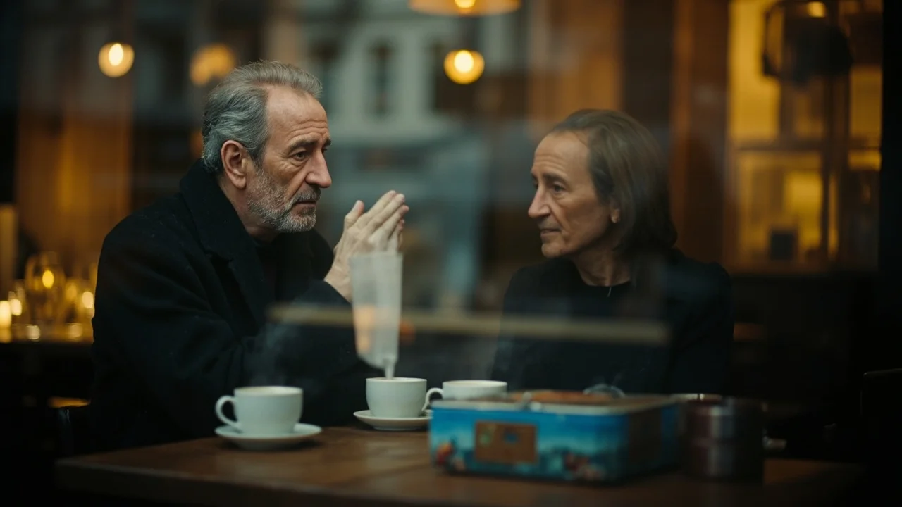

El viento en el callejón olía a alcantarilla y a harina tostada de las panaderías. Julián apoyó la rodilla en el cartón seco y metió medio cuerpo en el contenedor azul de los grandes almacenes. Sus dedos entumecidos palparon el plástico duro de un camión de bomberos y el tacto rugoso de un oso de felpa descartado tras un escaparate. Tenía un ojo de pasta colgando y serrín saliendo por la axila, pero la tela mantenía el brillo de lo que aún puede salvarse.
Metió ambos juguetes en su bolsa junto a cola rápida, cuerda encerada y un destornillador plano que guardaba de sus tiempos de mecánico. El reloj digital de la farmacia marcaba cuatro grados bajo cero; faltaban tres horas para que abrieran el comedor de San Cayetano y quedarse quieto al raso calaba los huesos del pecho.
Caminó esquivando charcos escarchados hasta el zaguán de la calle Olmo. La cancela de madera quedaba entornada por una cuña de goma durante el reparto de prensa, dejando un recodo resguardado bajo la escalera de mármol. Con su navaja cortó cuero viejo para rehacer el perno de la escalera del camión y cosió el oso con aguja gruesa de colchonero. Al terminar una pieza, envolvía el juguete con papel de periódico, ataba un cordel y escribía con carboncillo en el margen: «Para un niño valiente». Luego dejaba el paquete en el rellano de alguna vivienda humilde donde las persianas permanecían bajadas para no gastar calefacción. Nadie lo veía entrar ni salir. Para el vecindario era solo una sombra que cruzaba las esquinas antes de los barrenderos.
La memoria apretaba más con el frío. Hacía veinte años, Julián tenía una vida corriente y luminosa: su mujer, Isabel, enseñaba piano en una academia y su hija Lucía llenaba el pasillo con témperas de colores. Todo se quebró en tres semanas de otoño, cuando una hemorragia cerebral fulminante se llevó a Isabel en la cama de un hospital provincial.
Julián no supo sostener el vacío. Buscó amparo en los chatos de orujo del bar de la esquina para dormir y esquivar la mirada limpia de su hija al volver del colegio. Faltó al taller mecánico, llegaron las cartas de desahucio y la nevera se convirtió en un desierto de bombillas fundidas. Lucía tenía diez años cuando sus abuelos maternos llamaron a la puerta con dos maletas y los ojos secos de reproche. Se llevarían a la niña al pueblo, donde no le faltaría comida ni escuela.
Julián aceptó sin levantar la mirada del suelo, convencido de que su sombra era un veneno para la cría, y marchó antes del amanecer sin despedirse. Durante dos décadas arrastró consigo una caja de metal de galletas danesas que jamás abrió ante nadie: guardaba una muñeca de porcelana con traje de marinera, un caleidoscopio y una estilográfica, comprados en mercadillos cada diciembre. Jamás se atrevió a enviarlos por pavor al rechazo de su hija. Reparar juguetes para niños anónimos nació de esa cobardía: era su modo de dar cariño sin arriesgarse al castigo que merecía.
La tarde del dieciséis de diciembre el viento soplaba con ventisca fina. Julián estaba sentado en el último escalón del zaguán ajustando el muelle de un tiovivo de hojalata cuando la cancela rechinó. Una ráfaga empujó al interior a una niña menuda con chaquetón azul y una cartera escolar que le golpeaba las rodillas.
Se detuvo en seco al ver al anciano entre virutas y herramientas. Dos trenzas oscuras asomaban bajo un gorro de lana roja con borla blanca, y sus ojos vivos recorrieron el suelo.
—¿Eres un elfo de Papá Noel? —preguntó la niña.
Julián soltó una risa seca, con carraspera de tabaco negro y frío.

—No tengo orejas puntiagudas, chiquilla. Y los elfos suelen estar más limpios.
—Pero estás arreglando ese carrusel. En la tienda me dijeron que si se rompía la cuerda no servía para nada.
—Las tiendas quieren vender cosas nuevas —dijo él, tensando el muelle con las pinzas hasta que sonó un acorde cristalino—. Las cosas rotas solo necesitan paciencia y que no las den por perdidas.
La niña se acercó dos pasos, marcando barro fresco en el mármol.
—Me llamo Alba. Vivo en el tercero derecha. Mi madre limpia oficinas de noche y vuelvo sola. ¿Tú sabes coser patas de oso? El mío perdió una en la mudanza.
—Si me traes hilo resistente, puedo intentarlo —sonrió Julián bajo la barba.
Al día siguiente, a las cinco y cuarto, Alba regresó con una caja de zapatos llena de juguetes maltrechos y su oso descosido.
Durante las dos semanas siguientes, el recodo bajo la escalera fue un taller compartido y cálido. Alba bajaba puntual tras merendar y se sentaba en un cajón forrado con periódicos. Mientras Julián le enseñaba a enhebrar torzal en agujas gruesas y a lijar madera, la niña desgranaba su mundo infantil con sencillez.
—Mi padre se fue cuando yo tenía tres años —dijo una tarde, sujetando un botón de nácar—. Mamá dice que marchó al norte en un barco, pero Marcos dice que los que van a barcos mandan postales con peces. A mí no me ha llegado ninguna postal.
Julián sintió una punzada en la boca del estómago y apretó los alicates para disimular el temblor de sus manos.
—A veces los mayores se asustan de no saber cuidar lo que quieren y huyen creyendo que hacen menos daño lejos.

—Pues se equivocan —sentenció la niña—. Si alguien te quiere, se queda aunque la casa esté fría.
Una noche bajó la escalera Marta, la madre de Alba, con ojeras hondas y bata de limpieza. Al ver a su hija junto al anciano, se frenó en seco en el descansillo.
—¡Alba! ¿Qué haces aquí abajo?
—Mamá, es Julián. Me enseña a arreglar ruedas de camión.
Julián se levantó despacio, bajando la cabeza con respeto.
—Buenas noches, señora. Ya recogíamos. Su hija tiene maña; aprende rápido.
Marta bajó la guardia ante el trato respetuoso del hombre, pero susurró con firmeza para que la cría no oyera:
—Ayer la escuché decir que los padres siempre vuelven si prometieron hacerlo. No le meta esas ideas en la cabeza. Su padre nos dejó tiradas a deber tres meses de alquiler. Los que abandonan a sus hijos son unos cobardes. Y no quiero que Alba pase la infancia esperando en una ventana a quien jamás va a regresar.
Las palabras cayeron sobre Julián como losas de hielo. Recogió sus bártulos en silencio y salió a la ventisca sin saber qué responder.
Aquella noche no pegó ojo en la litera del albergue de San Cayetano; la frase de Marta le martilleaba las sienes: *son unos cobardes*. Al amanecer acudió a una cabina para llamar a una prima lejana de Isabel.
Bastaron dos minutos para averiguar el dato que no se había atrevido a buscar en dos décadas: Lucía había vuelto a la ciudad a los veintiún años para estudiar enfermería. Ahora tenía treinta, trabajaba en las urgencias del hospital central y vivía a cuatro paradas de metro.

A media mañana Julián aguardó frente a la salida del hospital. A las dos y cuarto vio salir a los sanitarios en el cambio de turno. Y entonces apareció ella. Caminaba con el paso decidido de Isabel, la cabeza ladeada y el pelo castaño en una coleta bajo un abrigo verde botella. Tenía las facciones rectas de su madre y la mirada limpia que él había abandonado cuando la niña tenía diez años. A Julián se le cortó el aliento. Quiso cruzar, pero las piernas no le respondieron. ¿Qué podía decirle tras veinte años de silencio cobarde? Vio a su hija subir a un autobús y perderse en el tráfico.
Regresó al albergue y escribió en una cuartilla con pulso trémulo:
«Lucía: No te pido nada porque no tengo derecho a pedirlo. Me marché por vergüenza, pero comprendí que mi vergüenza fue solo una cobardía que pagaste tú sola. Duermo en el albergue de San Cayetano. Si algún día quieres decirme a la cara lo que merezco oír, aquí estaré. Si prefieres no saber nada de mí, lo entenderé como la decisión más justa de tu vida. Tu padre, Julián».
Echó la carta al buzón de la plaza con manos temblorosas, sintiendo que rompía el candado de su propia celda.
La tarde de Nochebuena el cielo amenazaba nieve espesa. Las tiendas cerraban temprano y las familias apuraban las compras. Julián bajó al zaguán de la calle Olmo a dejar el último lote de juguetes restaurados: el camión de bomberos reluciente, dos muñecas limpias y el tiovivo afinado.
La cancela se abrió y Alba entró corriendo, sofocada, con las mejillas encendidas por la helada. Llevaba las manos a la espalda.
—¡Pensé que no te pillaba! —jadeó la niña—. Mamá me dejó bajar solo cinco minutos antes de cenar. Toma, es para ti.
Le tendió un paquete envuelto en papel de aluminio casero. Julián parpadeó, turbado. En veinte años nadie le había dado un regalo.
—Alba, yo no necesito regalos. Los juguetes son para vosotros.
—No es un juguete —dijo ella, empujándole el bulto contra el pecho—. Ábrelo.
Julián retiró el papel de plata. Dentro había unos guantes gruesos de lana gris marengo tejidos a mano, con forro térmico interior. Junto a ellos, una cartulina doblada mostraba un dibujo de ambos sentados junto a un banco y una frase infantil: *«Para Julián, para que no se le hielen los dedos al arreglar cosas. Espero que esta Navidad alguien te cuide a ti»*.
Julián apretó los guantes contra sus ojos para sofocar el llanto. Las lágrimas empaparon su barba blanca. Alba dio un paso y rodeó su cintura con los brazos, apoyando la frente en su abrigo desgastado.
—Feliz Navidad, Julián —susurró.
—Feliz Navidad, pequeña —respondió él acariciando la borla de su gorro—. Sube con tu madre, que la cena se enfría.
La vio subir saltando los escalones. Se calzó los guantes nuevos; su calor firme le reveló que la caridad anónima solo había sido el muro donde se ocultó de la verdad.
La mañana del veintisiete de diciembre amaneció helada. En el albergue de San Cayetano repartían café caliente antes del cierre diurno. Julián aguardaba en un banco junto a la cristalera con las manos enguantadas sobre las rodillas.
La puerta corredera se abrió y una corriente fría levantó el vaho del café.
Una mujer con abrigo verde botella y bufanda gris cruzó el umbral.
Buscó entre los rostros cansados. Julián se incorporó despacio; las rodillas le temblaban y el pulso le martilleaba la garganta. Padre e hija se miraron en un silencio espeso que apagó el rumor de la sala.
Lucía caminó hasta él. Tenía los ojos húmedos y la respiración entrecortada por el frío.
—¿Veinte años? —dijo con voz quebrada por el rencor y el desamparo acumulado—. ¿Veinte años a cuatro paradas de autobús?
Julián bajó la cabeza sin ofrecer coartadas.

—Fui un cobarde, Lucía. Me dio pánico que me vieras destruido y creí que sin mí estarías a salvo. Solo pensé en mi vergüenza. No espero que me perdones.
Lucía exhaló una bocanada de vaho frío:
—Durante años imaginé que habías muerto en una zanja. Era más fácil soportar la muerte que asumir que decidiste borrarme de tu vida como si nunca hubiera existido.
—No hubo un solo día en que no me acordara de ti —murmuró él con la voz rota—. Compraba un regalo cada diciembre y lo guardaba en una caja de hojalata porque no me atrevía a enviarlo.
—Un regalo que no llega no es un regalo, papá —replicó ella con amargura contenida—. Es solo un monumento a tu culpa.
Callaron mientras los demás hombres salían hacia la nieve. Lucía se secó una lágrima con el guante y miró la calle blanca.
—No sé qué hacer con esto. No puedo abrazarte ni fingir que no dolió cada fiesta y cada cumpleaños.
—Tienes todo el derecho a marcharte —admitió Julián.
Ella respiró hondo y se ajustó la bufanda:
—El martes libro a las tres. Hay una cafetería en la plaza que pone churros calientes. Si estás allí a las tres y media, nos tomaremos un café. Solo un café. Y me contarás qué has hecho estos veinte años.
Julián asintió sin voz, con un nudo en la garganta.
—Allí estaré.
Lucía lo contempló un segundo más y salió hacia la avenida nevada.
Aquella tarde la puerta de Marta se abrió de inmediato. La cocina olía a caldo de puchero y laurel. Alba tiró de la manga del anciano hacia la mesa de formica, donde humeaban tres platos hondos servidos y pan crujiente. Julián cenó con los guantes grises doblados junto al vaso, hablando de la escuela y de los últimos juguetes por entregar en el barrio. Por primera vez en dos décadas no sintió deseos de huir a la intemperie.
Al día siguiente acudió al centro municipal de servicios sociales. Solicitó la renovación de su carné caducado, inició los trámites para una vivienda tutelada para mayores y pidió cita médica para revisar sus pulmones castigados por la escarcha. Descubrió que pedir ayuda significaba dar el primer paso valiente para dejar de esconderse.
El siguiente invierno la nieve volvió a blanquear las cornisas. En el recodo de la calle Olmo seguía el cajón con herramientas. Pero en el saco de Julián, junto a los paquetes para niños humildes, descansaba una caja de metal limpia con un lazo azul marino y una tarjeta esmerada: «Para Lucía. Con veinte años de retraso y todo el amor que aprendí a no callar». Y Julián sabía que el martes a las cuatro no tendría que echarla al buzón. Se la entregaría en mano en la cafetería de la plaza, mientras el café humeaba entre ambos y la nieve caía mansa tras el cristal.